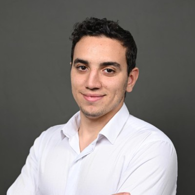

Étudiant BTS SIO option SISR à l'EFREI — je bidouille des serveurs et des réseaux depuis le lycée.
Je suis en BTS SIO option SISR à l'EFREI Villejuif. Avant ça, j'ai fait un DUT GEII à Cergy — c'est là que j'ai vraiment accroché avec l'informatique et les systèmes embarqués.
Ce qui me plaît vraiment, c'est tout ce qui touche aux infras : monter des serveurs, configurer des réseaux Cisco, faire de la virtualisation avec VMware ou KVM, administrer Linux et Windows Server. J'ai beaucoup pratiqué en dehors des cours, sur mon homelab personnel.
Je cherche une alternance en réseaux et systèmes à partir de septembre 2025, rythme 2 jours école / 3 jours entreprise, pour une durée de 12 mois.
